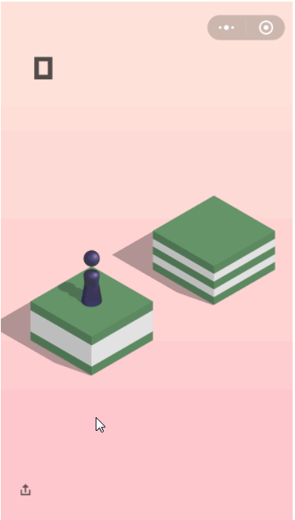

获取截图中...
loading...
1. 先打开微信，进入跳一跳小游戏，点击开始游戏
2. 在右边截图中依次点击选取(单击)棋子小人的底座中心点，和下一个积木的顶面中心点(单击)，并点击试跳按钮进行试跳，看时间系数是否正确
怎么选？

3. 如果能正确跳到积木中心，说明系数正确，可开始刷分，如果没跳正中心，需要手动调整系数继续试跳，确认系数正确后，点击开始刷分进入下一步
> 在右边截图中依次点击选取棋子小人的底座中心点和下一个积木的顶面中心点，选取完后会将会自动跳一步，下一步继续选即可
> 跳一步等屏幕截图刷新后再跳哦~
> 若选第一个点手残了，请点击 ->
> 一步两步，一步两步，一步一步似爪牙，似魔鬼的步伐...ㄟ(▔,▔)ㄏ
获取截图中...